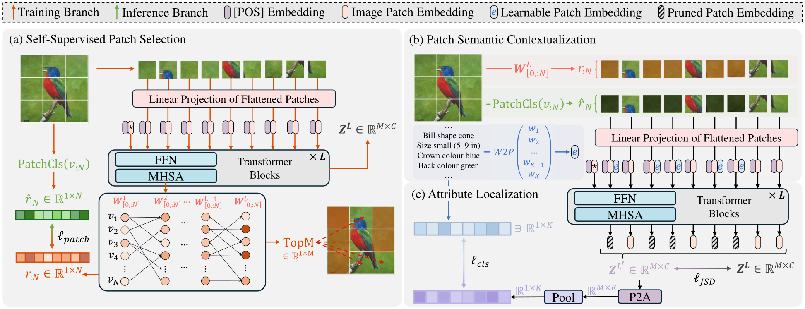

 
<h3>Zero-Shot Learning1</h3> 

<table  border="0" style="border: none; border-collapse: collapse; width: 100%; text-align: left;">
  <tr>
    <td style="width: 200px; vertical-align: top;">
      
    </td>
    <td style="vertical-align: top;">
      <a href="https://arxiv.org/pdf/2503.10252"><strong>SVIP: Semantically Contextualized Visual Patches for Zero-Shot Learning</strong></a><br>
      <strong>Zhi Chen</strong>, Zecheng Zhao, Jingcai Guo, Jingjing Li, Zi Huang <br>
      <em>Pre-Print</em><br>
      <a href="https://arxiv.org/abs/2503.10252">arXiv</a>
    </td>
  </tr>
</table>


